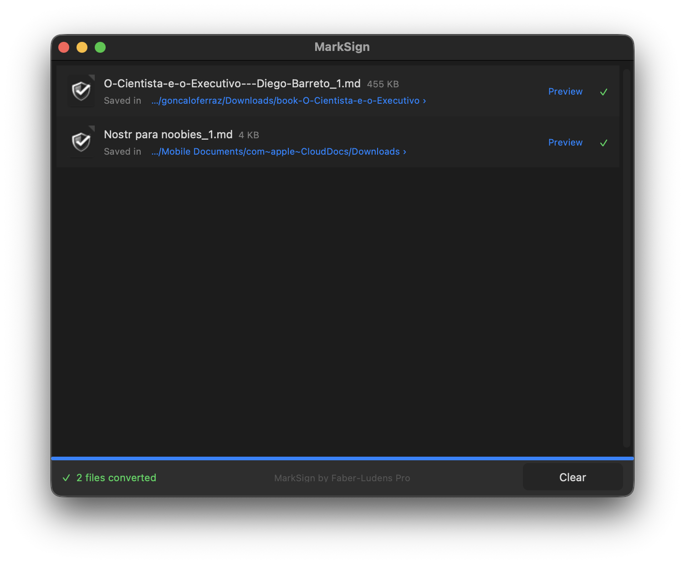
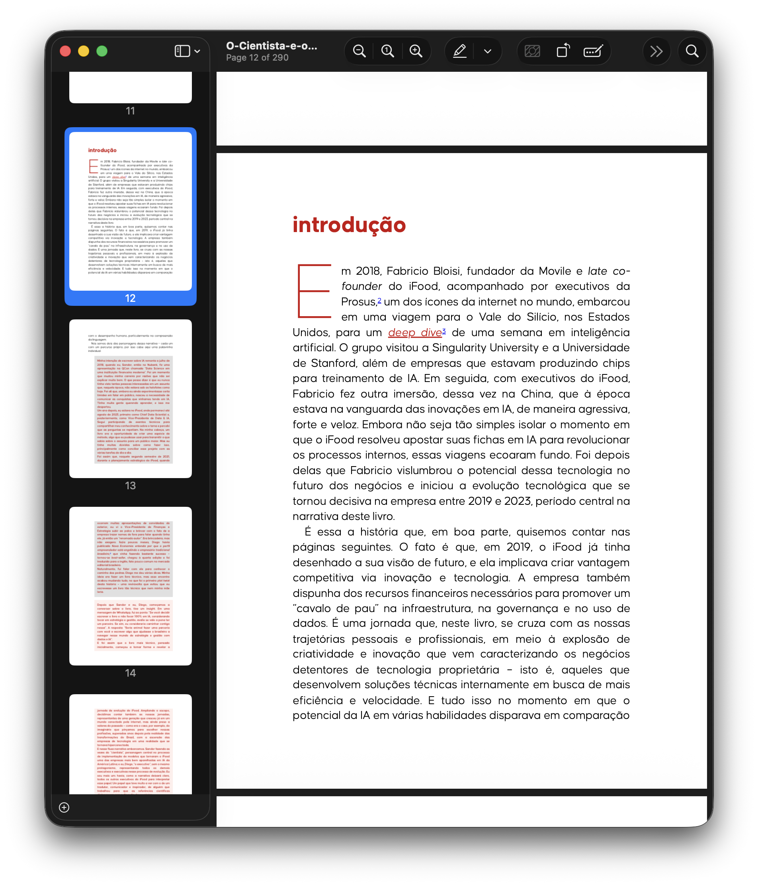
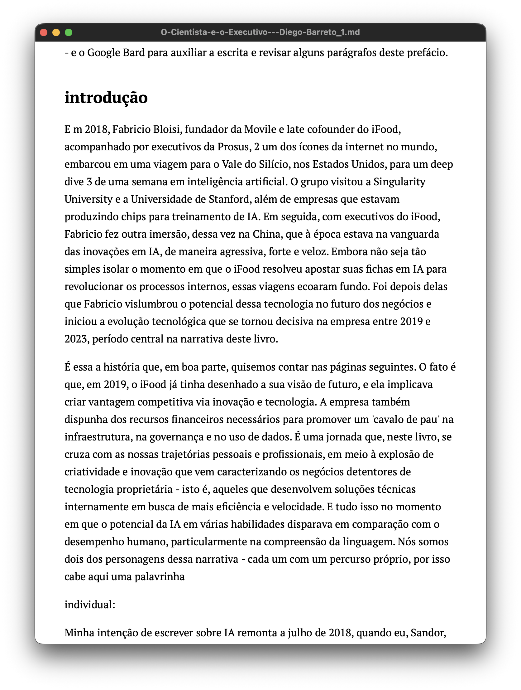

Drop a PDF, Word file, ePub, or slide deck. Get clean, structured Markdown in seconds — entirely on your Mac.
Download Now — FreemacOS 13 or later · Apple Silicon & Intel · 96 MB

What it does
PDF, Word, ePub, PowerPoint, HTML, images — MarkSign converts them all to clean, structured Markdown using a local pipeline built on docling, PyMuPDF, and MarkItDown. No cloud. No subscription. No copy-paste. The converted file appears next to the original, ready to use.
→ Source document

→ Converted Markdown

Who it's for
Feed client specs, research papers, or reports directly into Claude, ChatGPT, or Cursor as Markdown — the format they read natively.
Import any file into Obsidian, Bear, or Notion as structured Markdown without copy-paste or manual cleanup.
Add a Markdown version of any document to a code repository or content pipeline in one drag-and-drop — no scripts, no command line.
Supported formats
MarkSign selects the best converter automatically — you just drop the file.
Alpha testing
This is alpha software — it works, but some edge cases are not handled yet. If a conversion looks wrong or the app misbehaves, please open an issue. Every report helps.
Roadmap